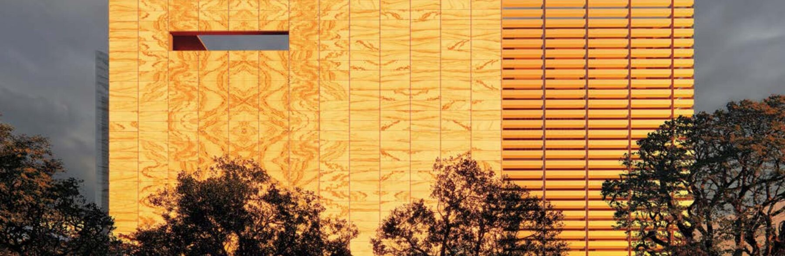

材料构造
GSG 精研组合构造
玻璃、PVB 与超薄天然石形成复合界面，在保留石纹的同时解决透光与安全需求。
把天然石的通透肌理，转译为可实施的建筑外立面系统

把材料表现、分格控制、节点配合与现场实施放进同一张可判断的建筑外立面图景里。
玻璃、PVB 与超薄天然石形成复合界面，在保留石纹的同时解决透光与安全需求。

把石材纹理、板块分格和现场安装顺序提前对齐，让天然肌理按设计意图落地。

灯轨、检修与隐蔽节点被纳入系统，减少后期维护对完成面的干扰。

明框、隐框、固定与收口不再分散说明，而是和立面效果一起被业主与顾问判断。